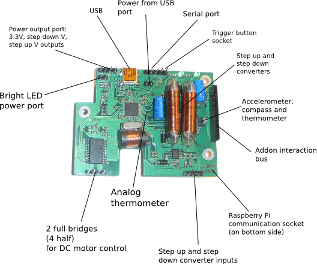
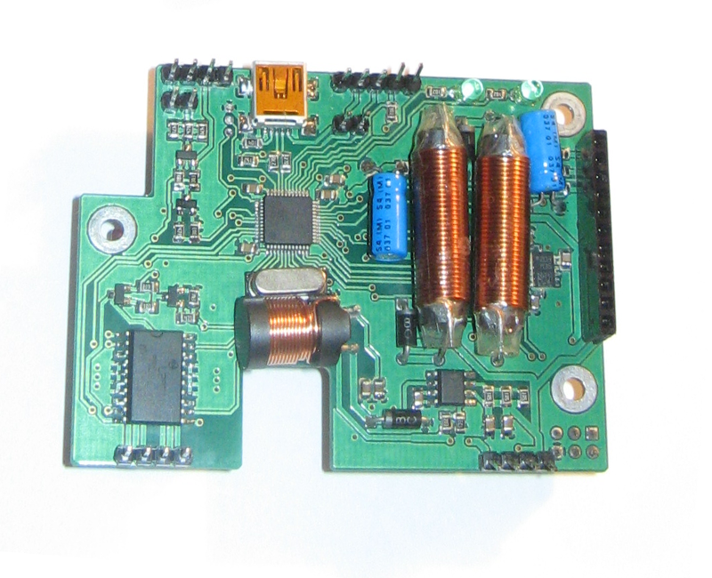
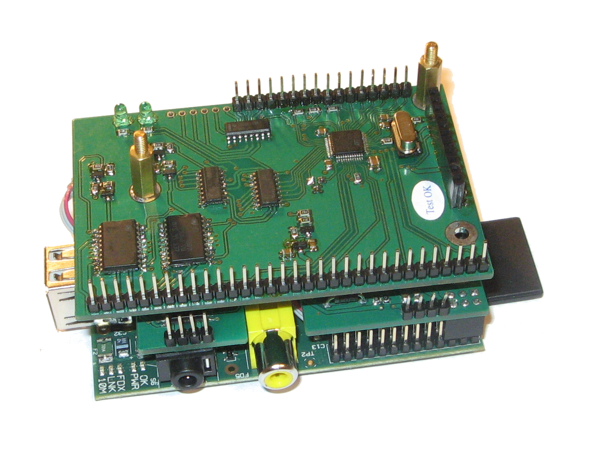
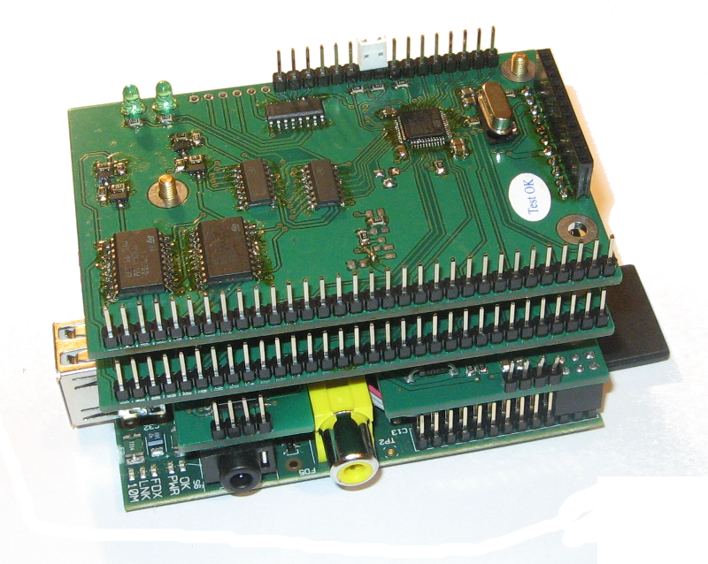
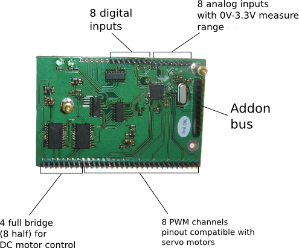
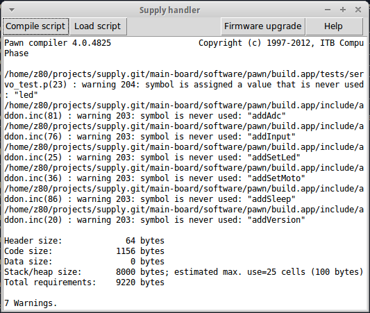

Supply board
This is a multipurpose board for large variety of applications from being a power supply with variable voltage and current to orientation in space and robot controller. Key features are the following.
- The first and primary feature is the board is scriptable. One may write a script file, compile and execute wihtin the board. It's behavior is completely determined by that script.
- It can be coupled with Raspberry Pi computer provide it with power and receive command from it.
- Board has powerful step up and step down voltage converters with input current control. All converter parameters are configurable from internal script. It allows using it in such applications as smart battery charging.
- It is also possible to implement voltage turn on/off according to a schedule specified.
- It provides an ability to collect low power energy (like from solar pannel of acceptable size) save it in a battery and power Raspberry Pi. E.i. make it not dependable on power network and on any external power sources. As it can turn it only when needed it doesn't cause a battery to discharge. It gives and ability to run Raspberry Pi anywhere where there is a sun light at least for several hours per day.
-
The board has a set of measuring devices:
- Accelerometer.
- Compass
- Digital thermometer.
- Analog thermometer.
- The board is equipt with motor controller (2 full/4 half brigres) for DC motor control. This allows using it for example for robot movement control.
-
The follwing communicational interfaces are available.
- USB
- I2C master bus
- I2C slave device
- Serial port
- Raspberry Pi power and communication port.
- Addon board connection port.

-
Presense of Raspberry Pi power and communication port allows.
- Turn Raspberry Pi computer on and off according to a schedule providing mean power consumption close to zero.
- Provides the system full computational power of regular computer allowing any applications up to video processing and WEB applications support.
- Control connected hardware directly from Raspberry Pi.


Board functionality can be extended by using addon boards. These addon boards are stacked on the main board
 
Addon board
For multiplying finctionality of main supply board there is an addon board. At the moment there is only one type of addon boards.

Addon boards are stacked on the main board. By meand of this it's functionality can be multiplied.
Addon board has the following devices.
- Servo/PWM controller with 8 independent outputs. Sockets are compatible with servo standard socket.
- DC motor control port with 4 full (or 8 half) bridges. This allows 4 bidirectional DC motors or up to 8 unidirectional per each addon board connected.
- 8 analog inputs with range from 0V to 3.3V. Measurement precission is 12 bits.
- 8 digital input pins. Application example is button press detection.
Important notice is that all boards (main one and addon) have LEDs for debug purposes. This makes it convenient to debug internal script and communication with computer.
Computer to board communication.
There are several ways to communicate with the board.
- C++ library
- Python USB communication module.
- Python I2C communication module. Specially for the case of stacked Raspberry PI computer.
Board programming with script.
Board is fully programmable. It has built in virtual machine which executes bytecode from internal FLASH memory. A simple GUI application is provided for compiling script files and uploading them into the board.
